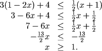

Solving Inequalities
Solving in Your Head
Just as we can look at an equation to guess what numbers will make it true, we can solve some inequalities mentally by asking which numbers will make the inequality true.
Note how the translation of the equation in the left column leads to the solution in the right column.
| To Solve | We Think | The Solution |
| \(x-1 \gt 0\) | "If x is larger than 1, the left-hand side is positive" | \(x>1\) |
| \(x+4 \lt 10\) | "As long as x stays smaller than 6, the left-hand side will be less than 10" | \(x \lt 6\) |
| \(3-x \lt 0\) | "When x gets larger than 3, the left-hand side will be negative" | \(x \gt 3\) |
| \(x-2 \ge 0\) | "If x=2 then x-2 is zero. When x is larger than 2, then x-2 is positive" | \(x \ge 2\) |
| \(x^2(x+5) \gt 0\) | "The value of \(x^2\) is always positive, so x+5 needs to be positive" | \(x \gt -5\) |
Notation
When we want to describe intervals, we can sometimes use double inequalities: to describe all \(x\) values between \(a\) and \(b\), we write \(a \lt x \lt b\). (We assume \(a \lt b\).) Note, however, that if we want to describe all values of x which are either less than \(a\) or greater than \(b\) we have to write it as two intequalities: \(x \lt a\) or \(x \gt b\). Because \(a \lt b\) it is impossible to write a double inequality that describes both of \(x lt a\) and \(x \gt b\) simultaneously.
Operations on Inequalities
We solve inequalities using some of the techniques used in solving equations. However, there are some important differences in the application of these techniques to inequalities. In particular, we have to be careful that the operation we apply to both sides of the inequality leaves it unchanged.
Operations on Inequalities:
For a, b, and c real numbers: if \(a \lt b\), then:
| \(a+c \lt b+c\) | (we can add to either side and leave the inequality unchanged) |
| \(a(c) \lt b(c),\ if\ c \gt 0\) | (multiplying by a positive number leaves the inequality unchanged) |
| \(a(c) \gt b(c),\ if\ c \lt 0\) | (multiplying by a negative number reverses the inequality) |
| \(a^2 \lt b^2,\ if\ a \gt0\ and\ b \gt 0\) | (for positive numbers squaring both sides leaves the inequality unchanged) |
| \(\frac{1}{a} \gt \frac{1}{b},\ if\ a \gt 0\ and\ b \gt 0\) | (for positive numbers, inverting both sides reverses the inequality) |
Note carefully which factors or expressions are common to each term and are factored out.


Solving Linear Inequalities
Notice how in the previous examples we used the same techniques we use to solve linear equations: we isolate the variable on one side of the inequality. With inequalities, however, we have to be careful about reversing the inequality when multiplying or dividing by a negative number.
Note where the inequality changes.

Practice
Question 2:
Return to Main